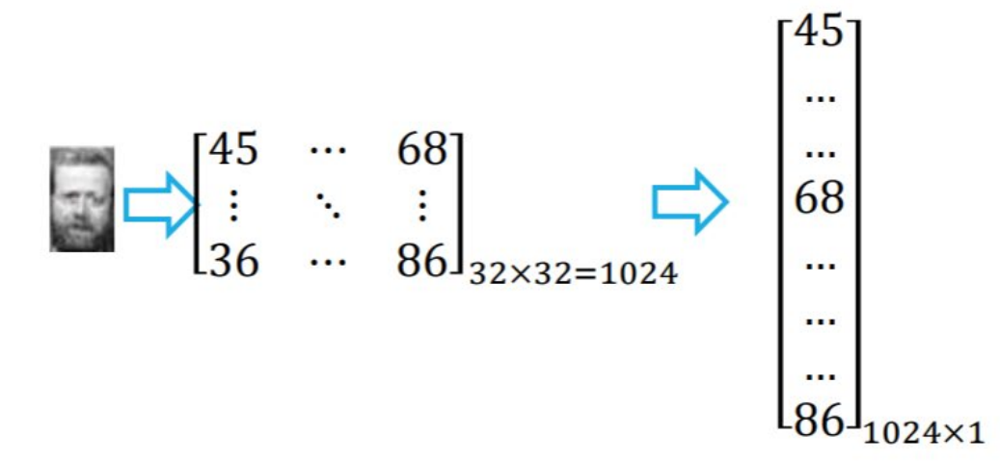

# K-Means
������������ν�n���������������ƶȴ�С�����Ƿֱ���ൽk�����ϣ�ʹ��ÿ�����ݽ�����һ�����༯�ϡ�
- ��ʼ�����ģ����ѡ��k�����ݵ���Ϊ��ʼ������
- �������ݵ㣺����ÿ�����ݵ������������������ĵľ��룬��������䵽����������������ڵĴ���
- �������ģ�����ÿ���أ�����ô����������ݵ��ƽ��ֵ������ƽ��ֵ��Ϊ�µ����ġ�
- �������̣��ظ�ִ�з�����²��裬ֱ�����IJ��ٷ����仯��ﵽԤ���������������
# ���ɷַ���(PCA)
- ���룺n��dά�������������ɵľ�������ά���ά��l
- �����ӳ�����
�㷨���裺
- ����ÿ�����������������Ļ�������
- ����ԭʼ�������ݵ�Э�������
-
��Э���������������ֵ�ֽ⣬����������������ֵ��С����
-
ȡǰ���������������Ӧ�����������ӳ�����\mathbf
-
��ÿ�����������������·�����ά��
���֣�
| �� | PCA | LDA |
|---|---|---|
| ���� | �ල | �мල |
| Ŀ�� | ����������Ҫ�ֲ���Ϣ | ��������룬��С�����ھ��� |
| �Ƿ�ʹ�������Ϣ | ? ��ʹ�� | ? ʹ�� |
| �������� | ����ѹ�������ӻ���ȥ�� | ���������������ȡ |
| ��ά��ά������ | �����⣬��һ��С��ԭά�� | ��ཱུ�� ά�� ��������� |
| ��ѧ���� | Э������������ֵ�ֽ� | ���/����ɢ�Ⱦ���Ĺ�������ֵ�ֽ� |
- ������������
- �Ǹ�����ֽ� ��non-negative matrix factorization, NMF��
- ��ά�߶ȷ���Metric multidimensional scaling, MDS��
- �ֲ�����Ƕ�루Locally Linear Embedding��LLE��
# ������������
����ʱ��ÿ������ͼ��ת����������

�㷨����
- ���룺��1024ά�����������������ɵľ�������ά���ά��
- �����ӳ�����������ÿ����һ������������
�㷨����
-
���Ļ�������
- ��ÿ���������������������Ļ�������
- ��ÿ���������������������Ļ�������
-
�����������
- ����ԭʼ�����������ݵ�Э�������
- ����ԭʼ�����������ݵ�Э�������
-
����ֵ�ֽ⣺
- ��Э���������������ֵ�ֽ⣬���������������Ӵ�С����
- ��Э���������������ֵ�ֽ⣬���������������Ӵ�С����
-
����ӳ�����
- ȡǰ���������������Ӧ�����������ӳ�������
-
���ݽ�ά��
- ��ÿ������ͼ���������·�����ά��
- ��ÿ������ͼ���������·�����ά��
����ʵ�õ���pca�����һ�����������ʱ���32*32��ͼ̯����1024*1�����������ѣ�
# DZ�����������Latent Semantic Analysis, LSA��
����
-
��������-�ĵ�����
- ����һ������-�ĵ�����������ÿ��Ԫ����ʾ���������ڵ����ĵ��е�Ƶ�ʣ�ͨ��ʹ�ô�Ƶ-���ĵ�Ƶ��TF-IDF���м�Ȩ����
-
����ֵ�ֽ⣨SVD����
- �Ե���-�ĵ�������������ֵ�ֽ⣬�����������ֱ���������������������������ɵľ����ǶԽǾ�����Խ����ϵ�Ԫ����������ֵ�����������У���
-
ѡ��ǰ���������ֵ����Ӧ������������
- ѡȡǰ����������ֵ�����Ӧ�������������γɵ��ȱƽ�������������ѡ��ȡ���ڱ�������ԭʼ��Ϣ����ͨ�������ۻ����������ȷ����
-
�ؽ������ھ������ϵ��
- ʹ������ԭʼ���������Լ������������ĵ�֮������ƶȣ���Ƥ��ѷ���ϵ�������Ӷ������ĵ�-�ĵ�֮��Ĺ�����ϵ��
- ͬ���أ�Ҳ��������̽������-���ʡ�����-�ĵ����������ϵ��
# ��������㷨��Expectation-Maximization Algorithm, EM��
EM�㷨��һ�ֵ�����������Ҫ���ں����������ĸ���ģ�Ͳ����������⡣����ΪE��������������M���������ͨ��������ʽ�ƽ�ģ�Ͳ����������Ȼ����ֵ��
����
-
��ʼ��ģ�Ͳ�����
- ����Ϊģ�Ͳ����趨��ʼֵ�������˹���ģ���еľ�ֵ������ȣ���
-
E����Expectation Step��������������
- ���ڵ�ǰ��ģ�Ͳ����������������ĺ�����ʷֲ�������ÿһ�������Ϳ��ܵ���������������������ʾ��ǰ��ģ�Ͳ�����
-
M����Maximization Step���������Ȼ��������ģ�Ͳ���
- ���ݹ۲��������������ĺ�����ʷֲ������¹���ģ�Ͳ�����������������ݵĶ�����Ȼ������������
-
�ظ�E����M����
- �����ظ�ִ��E����M����ֱ��ģ�Ͳ����������ߴﵽԤ���ĵ�������Ϊֹ��
�����û���������Ҷ�����˵